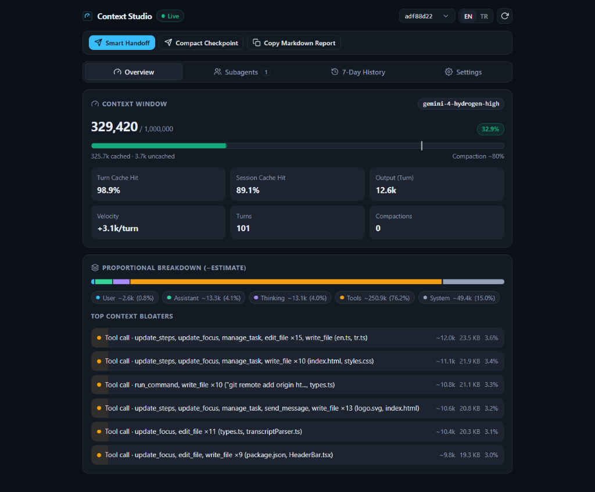

Live Sidecar Web UI
Incremental byte-offset reader streaming exact context fill, prompt cache hit rates, subagent summaries, and 7-day history over SSE.
Google Antigravity Plugin · Zero Token Overhead
Monitor exact token fill, prompt cache efficiency, top context bloaters, and subagent usage locally without spending a single model token.

Built directly on top of local transcript.jsonl logs with zero external runtime dependencies.
Incremental byte-offset reader streaming exact context fill, prompt cache hit rates, subagent summaries, and 7-day history over SSE.
Checks configurable 70% warning and 85% critical thresholds after each turn and emits user-only markdown cards with empty systemMessage.
Top toolbar triggers Smart Handoff, Compact Checkpoint, and Markdown Report export. Optional MCP App stays off by default.
Requires Node.js 22+. Links cleanly into ~/.gemini/config/plugins/agy-context-studio.
git clone https://github.com/brhnshn/agy-context-studio.git
cd agy-context-studio
npm install
npm run build
npm run link:plugin